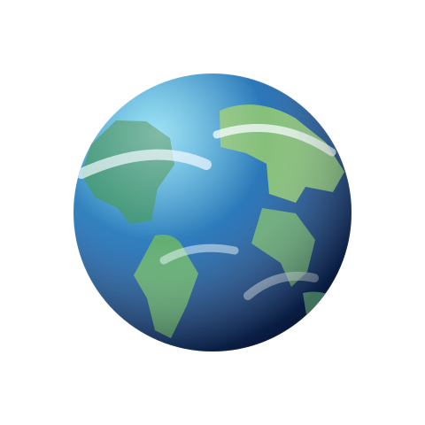

Все планеты рядом
Восемь миров — от каменистых планет до ледяных гигантов. Кратко и понятно.
ОТКРЫВАЙ НЕИЗВЕДАННОЕ / 001
От крошечного Меркурия до далёкого Нептуна. Восемь планет, тысячи открытий и одно место, чтобы начать путешествие.

SOL SYSTEM 03 / 0801 / ПЛАНЕТАРИЙ
Листайте, знакомьтесь и выбирайте следующий пункт своего космического маршрута.
02 / ПОЧЕМУ ОРБИТА
Восемь миров — от каменистых планет до ледяных гигантов. Кратко и понятно.
Поиск и фильтры помогут быстро найти интересующую планету и прочитать детали.
Зарегистрируйся, добавляй планеты в избранное и возвращайся к ним в кабинете.
03 / АТЛАС ПЛАНЕТ
Кликните «Подробнее», чтобы узнать факты о любой планете. Сохраняйте понравившееся в избранное.
Попробуйте другое название или выберите другую категорию.
04 / О ПРОЕКТЕ
«ОРБИТА» — небольшой интерактивный атлас Солнечной системы. Мы собрали основную информацию о восьми планетах и оформили её как удобную цифровую экспедицию.
Здесь нет сложных формул: исследуйте факты в карточках, переключайте слайды и собирайте собственное избранное. Расстояния округлены и указаны как средние расстояния от Солнца.
Начать с планет05 / ВОПРОСЫ И ОТВЕТЫ
Коротко о том, как устроен наш космический атлас.
По современной классификации в Солнечной системе восемь планет. Плутон с 2006 года относится к карликовым планетам.
Создайте учебный аккаунт, войдите и нажмите сердечко на карточке. Список появится в вашем личном кабинете.
Сайт работает локально через простой HTTP-сервер; данные и иллюстрации хранятся в проекте. Интернет нужен только для загрузки дополнительных шрифтов и публикации на GitHub Pages.
Мы используем округлённые средние расстояния от Солнца. Реальные расстояния постоянно меняются, потому что планеты движутся по орбитам.
ТВОЯ КОСМИЧЕСКАЯ КОЛЛЕКЦИЯ
Заведи профиль и собери собственное созвездие избранных планет.